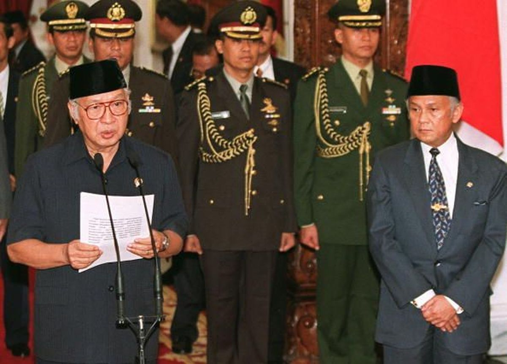
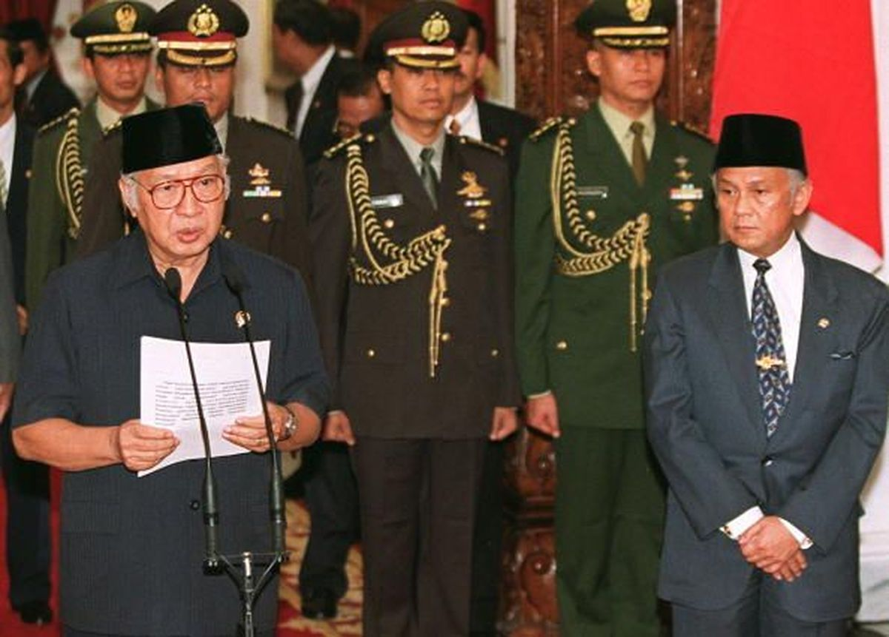

|
Sejarah
Penyebab kegagalan
 |
Demokrasi Pancasila (1966-1998)
Sejarah
Penyebab kegagalan


Demokrasi Pancasila merupakan konsep demokrasi yang memiliki landasan nilai dalam Pancasila, yang merupakan dasar negara Indonesia. Menurut Mohammad Hatta (dalam Agustam, 2011:82), demokrasi Pancasila adalah demokrasi yang berdasarkan kekeluargaan dan gotong royong yang ditujukan kepada kesejahteraan rakyat, yang mengandung unsur-unsur berkesadaran religius, berdasarkan kebenaran, kecintaan, dan budi pekerti luhur, berkepribadian Indonesia, dan berkesinambungan. Pada masa ini, demokrasi yang digunakan mengandung nilai-nilai dan tujuan yang tertuang dalam sila-sila Pancasila. Pancasila terdiri dari lima sila, yaitu KeTuhanan Yang Maha Esa, Kemanusiaan yang Adil dan Beradab, Persatuan Indonesia, Kerakyatan yang Dipimpin oleh Hikmat Kebijaksanaan dalam Permusyawaratan/Perwakilan, dan Keadilan Sosial bagi Seluruh Rakyat Indonesia.
Prinsip utama yang dijunjung tinggi pada masa ini adalah kedaulatan rakyat. Dengan itu, prinsip tersebut menegaskan bahwa kekuasaan politik sekarang ada di tangan rakyat, dan rakyat dapat mengeluarkan pendapat mereka melalui cara demokrasi. Walaupun itu, pada masa ini tetap saja memiliki kekurangan pada sistemnya.
Sistem demokrasi pancasila merupakan sistem demokrasi yang dianut masyarakat Indonesia pada masa orde baru di bawah kepemimpinan Presiden Soeharto (1966-1998). Sistem ini dimulai sejak Soeharto yang mengeluarkan surat Perintah Sebelas Maret (Supersemar), pada tahun 1966, yang memberikannya kuasa untuk mengambil kekuasaan dari tangan Soekarno.
Menurut Mahfud mD dalam bukunya Demokrasi dan Konstitusi di Indonesia: Studi tentang Interaksi Politik dan Kehidupan Ketatanegaraan (2003), Demokrasi Pancasila menekankan pentingnya musyawarah untuk mufakat dalam pengambilan keputusan. Maka, para pemimpin tidak boleh bertindak sepihak, melainkan harus mengadakan voting (pemungutan suara).
Walaupun itu, Demokrasi Pancasila tidak berhasil diimplementasikan secara baik dan benar. Beberapa faktor kegagalan adalah;
-Tidak adanya rotasi kekuasaan eksekutif, sehingga Soeharto berkuasa selama lebih dari 30 tahun
-Rekrutmen politik yang tertutup, sehingga hanya orang-orang dekat Soeharto yang mendapat posisi penting
-Pemilu yang tidak demokratis, sehingga partai-partai oposisi tidak memiliki kesempatan untuk bersaing
-Pelanggaran HAM, seperti pembunuhan, penangkapan, penyiksaan, dan penculikan paksa terhadap aktivis, mahasiswa, dan tokoh-tokoh kritis.
-Praktik KKN (Korupsi, Kolusi, dan Nepotisme) yang merajalela, sehingga menyebabkan kerugian negara dan rakyat.
Sistem ini jatuh bersama dengan orde baru pada 1998. Karena Krisis ekonomi, pelanggaran HAm dan terjadinya KKN, terjadilah pergerakan protes massa secara besar-besaran pada pertengahan tahun 90-an yang menuntut adanya reformasi. Pada 21 Mei 1998 Soeharto mengundurkan diri sebagai presiden, dan menyerahkan kuasanya kepada BJ Habibie.
Ciri-ciri Demokrasi
1.Mengikuti dasar nilai Pancasila
2.Mengutamakan kedaulatan rakyat
3.Keberagaman dan toleransi
4.Gotong royong
5.Perlindungan hak asasi manusia
6.Partisipasi publik
7.Sistem ketatanegaraan
Penyimpangan Demokrasi Terpimpin
Pada masa demokrasi terpimpin mulai munculnya sistem otoriter dimana pemimpin atau kelompok kecil yang berkuasa membatasi kebebasan berindividu rakyat, hak-hak politik rakyat, dan kebebasan berpendapat. Pemerintah memiliki kuasa yang kuat atas media massa yang dapat dikonsumsi rakyat. Seringkali juga menggunakan kekuasan mereka untuk menghukum individu-individu tersebut yang berani melanggarnya. Pada masa ini juga, pemimpin negara dapat memanipulasi proses politik, pemilihan umum, dan lembaga-lembaga negara agar mereka tetap memiliki kuasa mereka. Hal yang bisa dilakukan sebagai contoh adalah, mengubah hasil pemilihan umum, melarangkan partai politik untuk beroposisi, dan menggunakan kekuatan negara untuk menghancurkan lawan politik. Tentu saja pada masa ini korupsi sering menjadi masalah serius. Ketidaksetaraan dan konsentrasi kekuasaan yang tinggi dapat memberikan peluang bagi korupsi yang melibatkan pejabat pemerintah, pemimpin politik dan kelompok elit yang berkuasa.
Walaupun pada masa ini yang menekankan tujuan sosial dan ekonomi yang setara, ada kemungkinan terjadinya ketidakadilan sosial antara rakyatnya.
Karena kekuasaan yang terpusat, terjadinya ketimpangan ekonomi dan sosial yang signifikan.
Sering terjadinya, masyarakat umum tidak mendapatkan janjian pemerintah, melainkan kelompok yang berkuasa dapat semua keuntungan negara.
Kurangnya akuntabilitas yang diambil oleh pemimpin negara. Ada kemungkinan dimana pemimpin negara tidak dipertanggungjawabkan sesuai dengan tindakan dan kebijakan mereka.